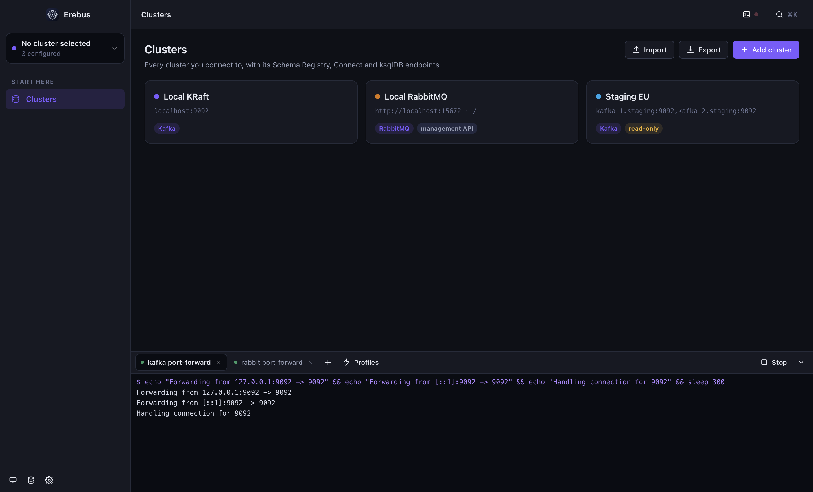
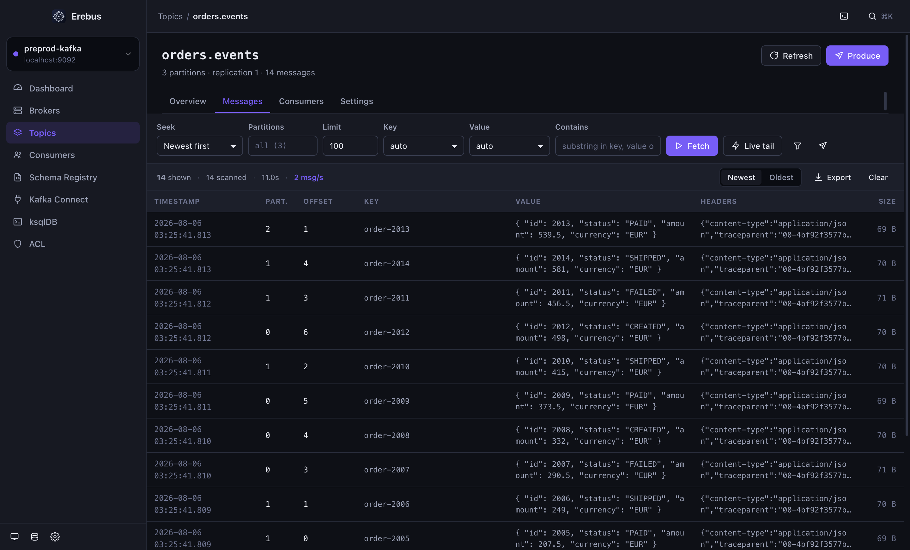
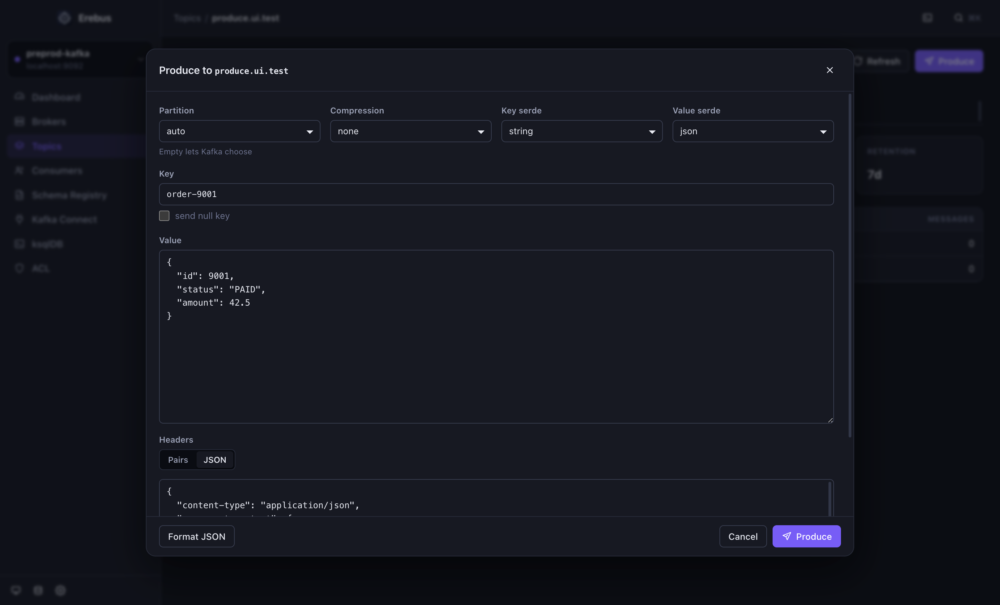
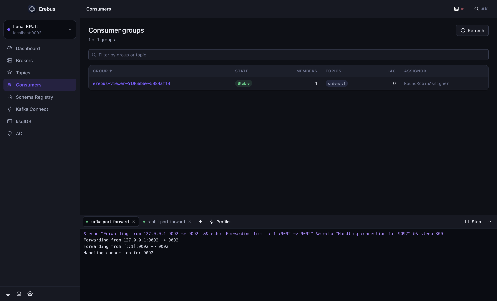
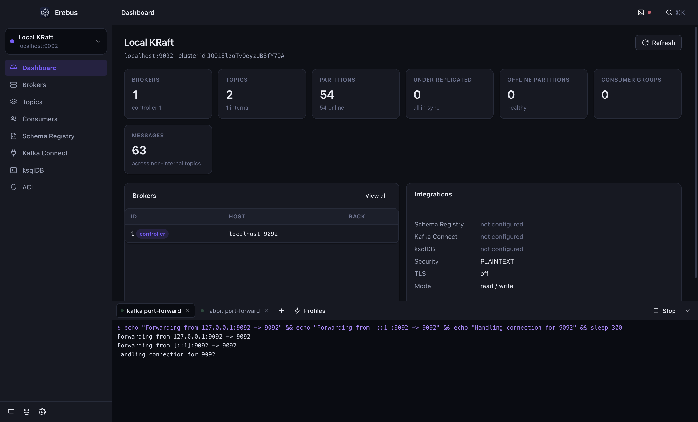
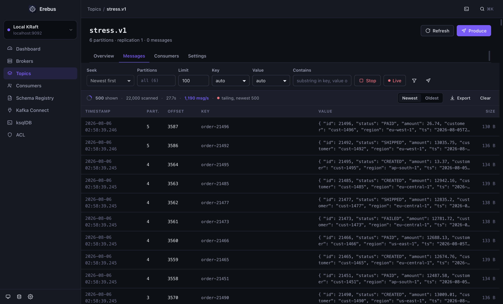
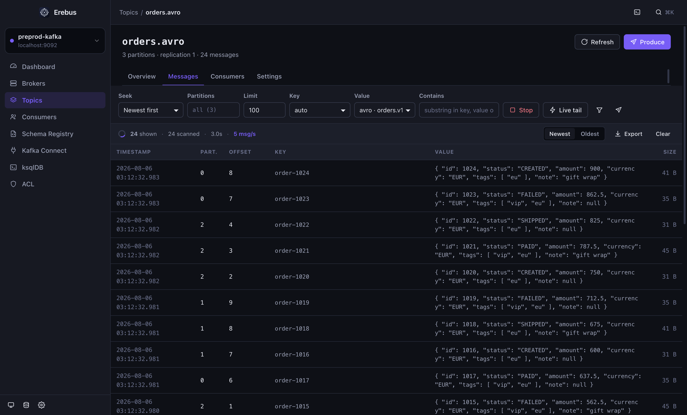
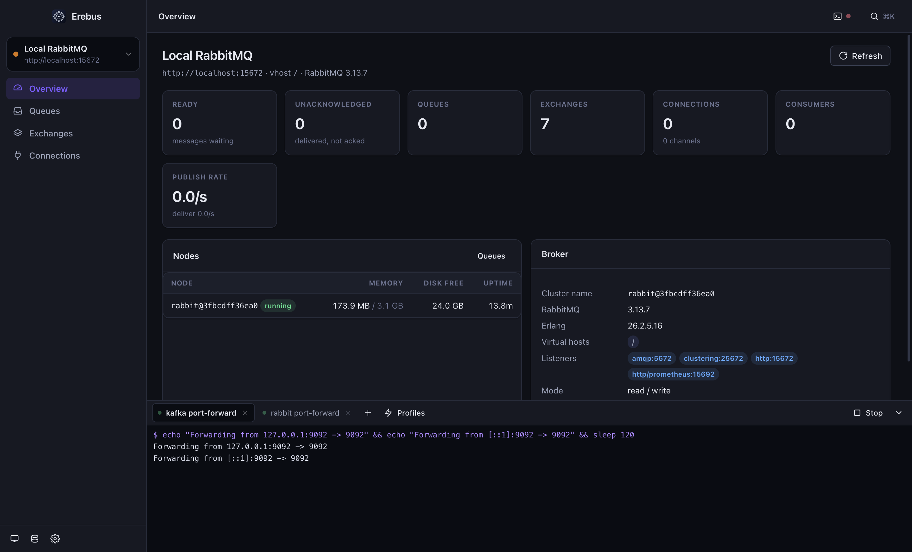

And an agent that speaks it too51 MCP tools for Claude Code
Scroll
For years the answer to “let me look at that topic” was a browser tab someone had to host,a login, a ticket.Erebus is the other answer:a native window that talks straight to your brokers,with your credentials, from your laptop.
Kafka and RabbitMQ side by side, each with its own colour, credentials and integrations. Secrets go into the OS keychain, never a config file in plain sight.
SASL · TLS
Schema Registry
Kafka Connect
ksqlDB
read-only mode
02 — READ
Find the one message that matters
Seek by newest, oldest, offset or timestamp. Narrow it with a substring — or a JavaScript predicate evaluated per message in a sandbox. Headers are rendered as JSON, right in the list.
value.status === 'FAILED'
live tail
gzip · snappy · lz4 · zstd
03 — WRITE
Key, body and headers
Compose a message with its key, its body and its headers — pasted as a JSON object if that is how your producers send them. Or take any message you are looking at and send a copy.
Avro via registry
local .avsc
compression
target partition
04 — OPERATE
Lag, groups, offsets
Which group is behind, on which partition, and by how much. Reset to earliest, latest, an offset or a timestamp — and see the members that own each partition before you do.
per-partition lag
offset reset
DLQ triage
05 — REACH
The tunnel comes with the app
A terminal panel with tabs, running your kubectl port-forward through the login shell. Save it as a profile and it starts with Erebus — preprod is reachable before the first screen is painted.
auto-start profiles
real process groups
ANSI colours





Measured, not hoped about
Sixty thousand messages, one minute, nothing missed.
A paced producer pushed 60 000 records into a six-partition topic while the app tailed it live, window open. The numbers below are from that run — and it paid for itself twice by exposing two real defects, both fixed.
0
messages produced in 59.5 s
0msg/s
sustained by the live tail
0msg/s
bulk scan, decoded
0MB
renderer heap, steady

Model Context Protocol
Hand the whole thing to an agent.
Erebus --mcp serves 51 tools over stdio. It calls the same handlers the interface does, so Claude Code can do exactly what you can do — and nothing you cannot. A read-only cluster stays read-only for the agent too.
Kafka · RabbitMQ
your brokers
Erebus
desktop app
Claude Code
51 tools over MCP
“Port-forward staging Kafka, then show me the last 20 messages on orders.v1 where status is FAILED.”
“Which consumer group is lagging, on which partitions, and since when?”
“Publish this payload to the orders exchange and tell me whether it routed.”
Serialisation
Binary that reads like JSON.
Avro through the Schema Registry, with the Confluent wire format handled. No registry, or one you cannot reach from your laptop? Paste the .avsc and it becomes a deserializer everywhere — reading and writing both.
Snappy, LZ4 and zstd topics open like any other. kafkajs ships gzip alone; the rest are here in pure JavaScript and WebAssembly, so the app still carries no native module.


Not only Kafka
RabbitMQ, same window.
Queues with ready and unacked counts, exchanges and their bindings, connections, channels and consumers. Peek at messages and put them back, or consume them for real. Publish and find out immediately whether anything was routed.